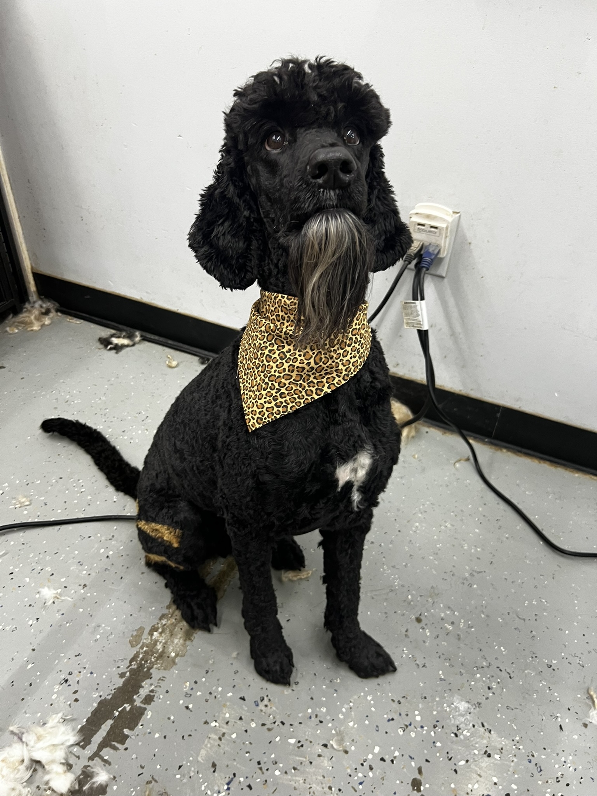
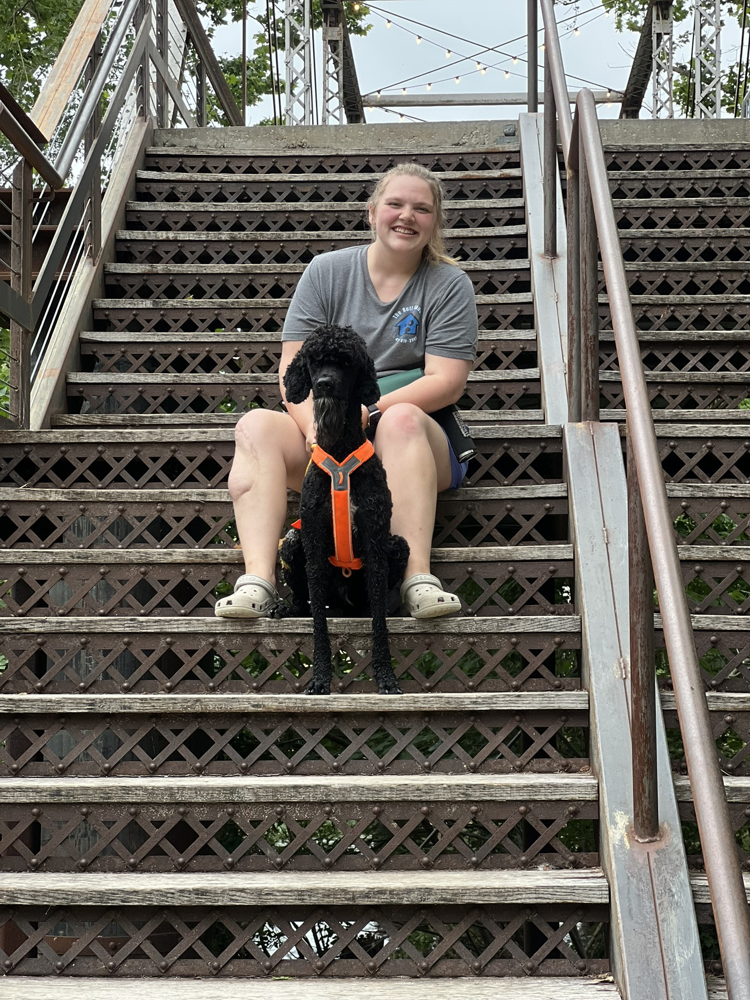
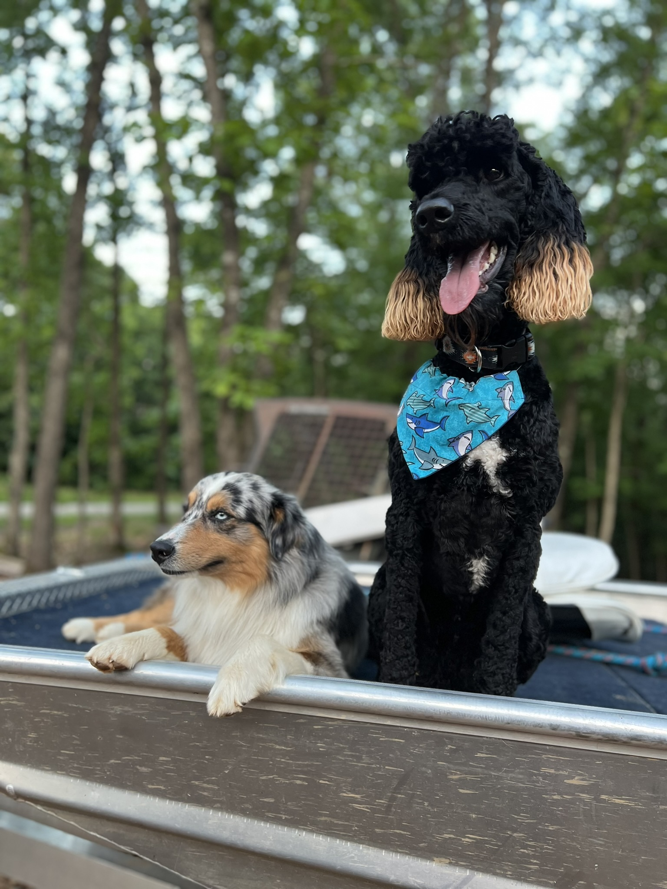
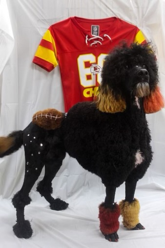
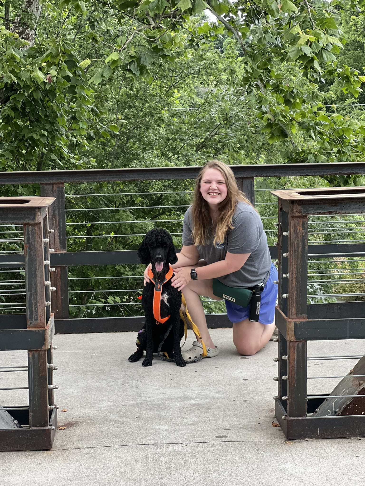

Fresh finish
Long beard, clean coat
Bo showing the longer beard and tidy finish that inspired the updated logo.
Completed grooms
A starter gallery using Bo and friends while this page grows into a real completed-grooms showcase.

Bo showing the longer beard and tidy finish that inspired the updated logo.

Bo is part of Mahlorie's everyday rhythm, from grooming days to outdoor time.

A relaxed outdoor shot with Bo and another dog for variety in the starter gallery.

One playful themed example, balanced with more natural Bo photos.

A clean profile image for showing Bo's black coat, tan accents, and white chest patch.

A softer outdoor moment that fits the rural Stone County setting.